推荐景点
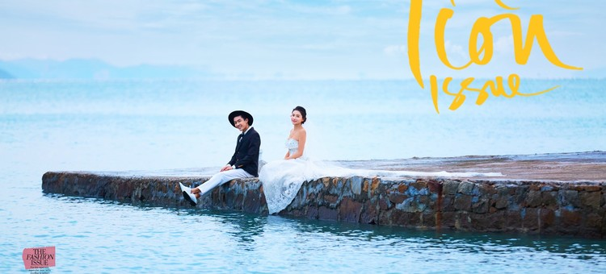
作品29
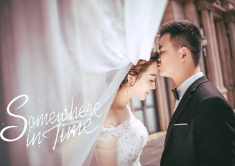
推荐理由
源自希腊神话第一女神的爱情典范，她拥有着女王般的优雅及尊荣，对爱情的忠贞，成为千古绝唱，在欧洲大地流传。我们追随赫拉女神的爱情指引，谱写贞洁的爱情华章：在古老庄严的罗马宫殿里，许下山盟海誓，英伦的贵气与法式的浪漫在这里激情碰撞。一切贵气奢华推荐指数
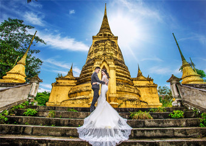
推荐理由
位于广州市郊区，距离广州市区最近的大型综合婚纱摄影基地，荟萃了世界五大洲的著名建筑、民间风情、建筑雕塑、自然景观、地貌奇观和园林艺术，均是按照1：1比例完美复制。基地内有曼谷金顶寺，南美羽蛇神庙，欧式教堂，古希腊剧场，印尼万年榕，法国长桥等推荐指数
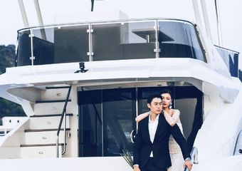
推荐理由
在深圳游艇上，远离都市的喧嚣，投入到蔚蓝大海的怀抱中，感受无敌海景，放松自己，享受遐意人生。 完美的将静怡休闲与时尚繁华相结合，可谓占滨海之地利，聚天地之灵气，奢华与之娇媚。推荐指数
推荐理由
影视城坐落于国家5A级景区西樵山山脚，车程一小时左右。内有2000平方的服务大厅，高级化妆区更衣室休息区配备。涵盖欧式韩式内景，还有大上海街景、古代宫殿、中国风建筑群、花海热气球、地中海风情建筑、教堂、古老火车等风格独特的元素，均为花巨资实推荐指数
推荐理由
华南植物园是中国历史最久、种类最多、面积最大的南亚热带植物园， 被誉为永不落幕的“万国奇树博览会”，有“中国南方绿宝石”之称。园区内古树参天，植物花卉繁多，有大型湖泊，有古老村落遗址，是拍摄森林系大片的绝佳景点。推荐指数
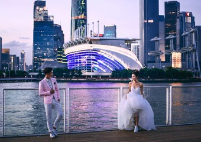
推荐理由
海心沙，位于广州市珠江内江海心沙洲，在珠江北主航道上。上游不远为二沙岛与广州大桥，下游不远处是新建成的猎德大桥，南部为珠江河心岛海珠岛，北为广州陆地，隶属于天河区。海心沙是广州著名地标，环境优美，四面江水环绕， IFC及小蛮腰等广州市标建筑推荐指数
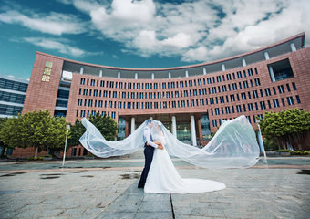
广州大学城一期进驻十所高校分别是：中山大学、华南理工大学、华南师范大学、广州大学、广东外语外贸大学、广州中医药大学、广
推荐理由
广州大学城，位于广州番禺区小谷围岛，岛内面积18平方公里。大学城周边有黄埔军校、辛亥革命纪念馆，孙中山纪念馆等旅游景点。广州大学城一期进驻十所高校分别是：中山大学、华南理工大学、华南师范大学、广州大学、广东外语外贸大学、广州中医药大学、广
推荐指数
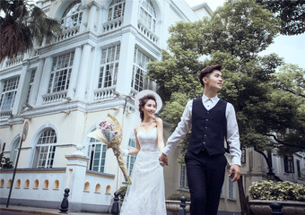
推荐理由
沙面是位于广州荔湾区的一座小岛，与芳村酒吧街相望，已被开发成国家5A级景区，是广州著名的旅游区、风景区和休闲胜地。岛上环境优美，古榕参天，有150多座欧洲风格建筑，有新巴洛克式、仿哥特式、券廊式、新古典式及中西合璧风格建筑，是广州最具异国情推荐指数
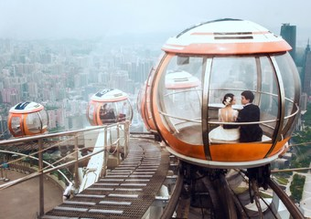
推荐理由
作为“羊城新八景”之一，广州塔肩负着传承广州2000多年历史文化底蕴、传扬广州国际化大都市发展轨迹的历史使命，一跃成为城市新地标，成为广州最受游客瞩目的旅游景区。其塔体高450米，天线桅杆高150米，以总高度600米占据中国高塔的地位，同时推荐指数
推荐理由
小洲村位于广州市海珠区，始建于元末明初，是广州城区内发现的最具岭南水乡特色的古村寨，已被列为广州市首批16个历史文化保护区之一。小洲村至今仍保留着岭南水乡的小桥流水人家，民居沿河而建，居民枕河而居，随处可见的百年古榕浓荫蔽日，五六百年高龄的推荐指数
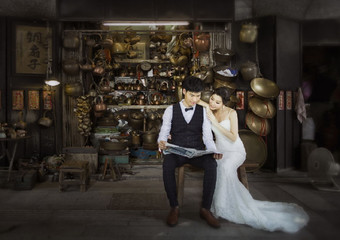
推荐理由
恩宁路位于广州荔湾区，在上下九步行街的末端，是广州市最完整和最长的骑楼街，是西关骑楼建筑的精髓，这里窖藏着詹天佑故居等十几处文物古迹。昔时的富贵人家的深宅大院已没有了往日的繁华却增添了一份沧桑感，多了一份时光记忆，凝聚了最醇厚的老广州的味道推荐指数
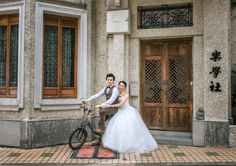
推荐理由
东山口有广州市现存规模最大的中西结合低层院落式的住宅建筑群，几乎每一座别墅都留存有一个望族或政要名人的故事。东山口的逵园艺术馆，建筑面积660多平方米，是东山洋房中的五大名园之一。这里的街道一条条一道道的交织加错，民国时期的建筑，岭南风情的推荐指数
推荐理由
二沙岛又称二沙头、二沙头岛，位于广州市中心珠江河段上，岛四周江水环抱，西北角面对东山湖公园，北面与珠岛宾馆和五羊新城隔江相望，西靠大沙头码头。二沙岛是广州顶级富豪的聚居地，岛上环境优美，鸟语花香，树林花园随处可见，独享闹市中的一份静谧。岛上推荐指数
推荐理由
是广州市区内最高端最齐全的韩式摄影基地，由韩国摄影师指导设计，为客户提供原汁原味的韩风摄影取景场地。基地2015年正式建成，内有韩式内景数十个，主题各异，装修精致，大到韩式花园，咖啡馆，小到韩式客厅卧室等，均有独特亮点，是韩式内景摄影的不二推荐指数
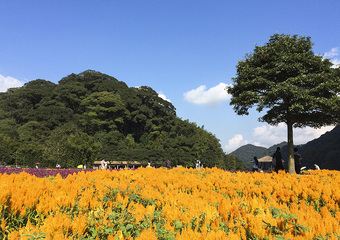
公园设有田园风光区、石门风景区、石灶风景区、天堂顶风景区、峡谷探险区等5个
推荐理由
石门国家森林公园位于广州市从化区桃园镇大岭山林场，总面积2636公顷，森林覆盖率达98.9%。公园里有华南地区仅存的原始次生林1.6万亩，被称为北回归线的一片绿洲。公园设有田园风光区、石门风景区、石灶风景区、天堂顶风景区、峡谷探险区等5个
推荐指数